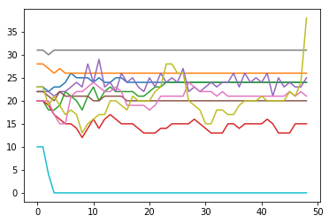

posterior P(x_n=1): [ 0.00226686 0.55822395 0.03461195 ..., 0.03658044 0.02094036
0.0097456 ]
Hamming distance = 21
posterior P(x_n=1): [ 0.00215446 0.59127978 0.03628343 ..., 0.03796637 0.01946031
0.00887569]
Hamming distance = 21
posterior P(x_n=1): [ 0.00193669 0.59267807 0.03248071 ..., 0.03730129 0.0197688
0.00903071]
Hamming distance = 21
posterior P(x_n=1): [ 0.00187085 0.62512286 0.03461462 ..., 0.03879079 0.01912633
0.00857605]
Hamming distance = 21
posterior P(x_n=1): [ 0.00178794 0.6311695 0.03182612 ..., 0.03990146 0.02072861 0.008577 ]
Hamming distance = 24
posterior P(x_n=1): [ 0.00181256 0.65056782 0.0330377 ..., 0.040639 0.02183337
0.00869226]
Hamming distance = 23
posterior P(x_n=1): [ 0.00180761 0.64545544 0.03004745 ..., 0.04096473 0.02287845
0.00859084]
Hamming distance = 22
posterior P(x_n=1): [ 0.00181455 0.65888664 0.03078393 ..., 0.04135604 0.02257904
0.00848098]
Hamming distance = 22
posterior P(x_n=1): [ 0.00176677 0.63325342 0.02804684 ..., 0.04095756 0.02288076
0.00848419]
Hamming distance = 22
posterior P(x_n=1): [ 0.00184171 0.63398961 0.03022785 ..., 0.04167949 0.0221435
0.00846917]
Hamming distance = 21
posterior P(x_n=1): [ 0.00188399 0.60839077 0.02883468 ..., 0.04159138 0.02308795
0.00886663]
Hamming distance = 22
posterior P(x_n=1): [ 0.00198962 0.61202613 0.0316627 ..., 0.04232892 0.02299906
0.00896212]
Hamming distance = 21
posterior P(x_n=1): [ 0.00205031 0.59198473 0.03006216 ..., 0.04142443 0.02360092
0.00936121]
Hamming distance = 21
posterior P(x_n=1): [ 0.00215047 0.5954003 0.03246036 ..., 0.04131811 0.02279279
0.00930022]
Hamming distance = 21
posterior P(x_n=1): [ 0.00216461 0.58127553 0.03121863 ..., 0.04053427 0.02273183
0.00929727]
Hamming distance = 21
posterior P(x_n=1): [ 0.00219547 0.59215078 0.03358706 ..., 0.04044133 0.02198471
0.00923762]
Hamming distance = 21
posterior P(x_n=1): [ 0.00213411 0.58575589 0.03214406 ..., 0.03983687 0.02215458
0.00922997]
Hamming distance = 21
posterior P(x_n=1): [ 0.00210385 0.60399931 0.03398806 ..., 0.03999287 0.02143963
0.00906021]
Hamming distance = 21
posterior P(x_n=1): [ 0.0020258 0.59638505 0.03188809 ..., 0.03911635 0.02163479
0.00909744]
Hamming distance = 21
posterior P(x_n=1): [ 0.00200948 0.61217267 0.03358963 ..., 0.03953253 0.02080459
0.00885213]
Hamming distance = 21
posterior P(x_n=1): [ 0.00195491 0.6050496 0.03148595 ..., 0.03913568 0.02138008
0.00892479]
Hamming distance = 21
posterior P(x_n=1): [ 0.00195715 0.61970098 0.03307149 ..., 0.03990115 0.02121107
0.00877068]
Hamming distance = 21
posterior P(x_n=1): [ 0.00192428 0.61250323 0.03095196 ..., 0.03992402 0.02206061
0.00884728]
Hamming distance = 22
posterior P(x_n=1): [ 0.0019441 0.6258312 0.03245353 ..., 0.04066174 0.02190141
0.00877187]
Hamming distance = 21
posterior P(x_n=1): [ 0.00192389 0.61550339 0.03044526 ..., 0.04055837 0.02244811
0.00884146]
Hamming distance = 22
posterior P(x_n=1): [ 0.00195686 0.62574251 0.03209976 ..., 0.04099473 0.02202625
0.0087889 ]
Hamming distance = 21
posterior P(x_n=1): [ 0.00193975 0.61275709 0.03033214 ..., 0.04070323 0.02251371
0.00890785]
Hamming distance = 22
corrupted msg # 8 : [ 0. 0. 0. ..., 0. 0. 0.]
posterior P(x_n=1): [ 0.08 0.08 0.08 ..., 0.08 0.08 0.08]
Hamming distance = 31
posterior P(x_n=1): [ 0.02511439 0.00757415 0.02511439 ..., 0.22691476 0.08 0.00757415]
Hamming distance = 31
posterior P(x_n=1): [ 0.03495848 0.00557268 0.02012226 ..., 0.31278498 0.16926677
0.00744731]
Hamming distance = 30
posterior P(x_n=1): [ 0.0365565 0.00490041 0.02366574 ..., 0.44463183 0.26727169
0.0101146 ]
Hamming distance = 31
posterior P(x_n=1): [ 0.03268706 0.00513797 0.02015105 ..., 0.41451547 0.24511096
0.00927932]
Hamming distance = 31
posterior P(x_n=1): [ 0.03251192 0.00487567 0.02561412 ..., 0.3888788 0.22873077
0.01063227]
Hamming distance = 31
posterior P(x_n=1): [ 0.02680737 0.00416656 0.02156042 ..., 0.37824083 0.21875429
0.00844966]
Hamming distance = 31
posterior P(x_n=1): [ 0.02768532 0.00435387 0.02061727 ..., 0.38633163 0.23750458
0.00925692]
Hamming distance = 31
posterior P(x_n=1): [ 0.02793749 0.00450925 0.02086507 ..., 0.40337225 0.2429941
0.00953175]
Hamming distance = 31
posterior P(x_n=1): [ 0.02809941 0.00456435 0.02147006 ..., 0.39879238 0.24226129
0.00949938]
Hamming distance = 31
posterior P(x_n=1): [ 0.02736253 0.00451142 0.02136684 ..., 0.39814055 0.24786828
0.00951514]
Hamming distance = 31
posterior P(x_n=1): [ 0.02704237 0.00438481 0.02111595 ..., 0.40187539 0.24414467 0.009273 ]
Hamming distance = 31
posterior P(x_n=1): [ 0.02720743 0.00443818 0.02119587 ..., 0.39979357 0.24523573
0.00937957]
Hamming distance = 31
posterior P(x_n=1): [ 0.02733389 0.00444654 0.02101359 ..., 0.4012205 0.24548949
0.00940442]
Hamming distance = 31
posterior P(x_n=1): [ 0.0273952 0.00443702 0.02123773 ..., 0.40050702 0.24608882
0.00936268]
Hamming distance = 31
posterior P(x_n=1): [ 0.02729198 0.00444963 0.02112316 ..., 0.40029816 0.24521734
0.00938638]
Hamming distance = 31
posterior P(x_n=1): [ 0.02730806 0.00443587 0.02114107 ..., 0.40047602 0.24501254
0.0093602 ]
Hamming distance = 31
posterior P(x_n=1): [ 0.02725202 0.004427 0.02109605 ..., 0.40032333 0.24531384
0.00934546]
Hamming distance = 31
posterior P(x_n=1): [ 0.02731529 0.00443888 0.02111092 ..., 0.40085052 0.24529602
0.00936786]
Hamming distance = 31
posterior P(x_n=1): [ 0.02730968 0.00443672 0.02112338 ..., 0.40057256 0.24545922
0.00936275]
Hamming distance = 31
posterior P(x_n=1): [ 0.02729323 0.00443428 0.02110765 ..., 0.40053599 0.24530865
0.00936294]
Hamming distance = 31
posterior P(x_n=1): [ 0.02730382 0.00443562 0.02112097 ..., 0.40054748 0.24532953
0.00936364]
Hamming distance = 31
posterior P(x_n=1): [ 0.02729031 0.00443381 0.02110897 ..., 0.40052253 0.2453196
0.00935889]
Hamming distance = 31
posterior P(x_n=1): [ 0.02729708 0.0044356 0.02111275 ..., 0.4005854 0.2453337
0.00936207]
Hamming distance = 31
posterior P(x_n=1): [ 0.02729919 0.0044351 0.02111353 ..., 0.40057111 0.24535886
0.00936228]
Hamming distance = 31
posterior P(x_n=1): [ 0.02729563 0.00443476 0.0211121 ..., 0.40056293 0.24533814
0.00936125]
Hamming distance = 31
posterior P(x_n=1): [ 0.02729728 0.00443534 0.02111384 ..., 0.40055946 0.24534728
0.00936229]
Hamming distance = 31
posterior P(x_n=1): [ 0.02729587 0.00443466 0.02111221 ..., 0.40056528 0.24534113
0.00936139]
Hamming distance = 31
posterior P(x_n=1): [ 0.02729596 0.00443505 0.02111267 ..., 0.40056452 0.2453414
0.00936168]
Hamming distance = 31
posterior P(x_n=1): [ 0.027297 0.00443508 0.02111306 ..., 0.4005659 0.24534783
0.00936197]
Hamming distance = 31
posterior P(x_n=1): [ 0.02729605 0.00443489 0.02111257 ..., 0.4005656 0.24534385
0.00936156]
Hamming distance = 31
posterior P(x_n=1): [ 0.02729653 0.00443508 0.02111299 ..., 0.40056374 0.24534429
0.0093619 ]
Hamming distance = 31
posterior P(x_n=1): [ 0.02729642 0.00443496 0.02111277 ..., 0.40056494 0.24534426
0.00936172]
Hamming distance = 31
posterior P(x_n=1): [ 0.02729624 0.00443497 0.02111277 ..., 0.40056434 0.24534361
0.00936169]
Hamming distance = 31
posterior P(x_n=1): [ 0.02729653 0.00443502 0.02111288 ..., 0.40056472 0.24534441
0.00936182]
Hamming distance = 31
posterior P(x_n=1): [ 0.02729637 0.00443497 0.02111277 ..., 0.40056469 0.24534405
0.00936171]
Hamming distance = 31
posterior P(x_n=1): [ 0.02729639 0.004435 0.02111284 ..., 0.40056436 0.24534412
0.00936176]
Hamming distance = 31
posterior P(x_n=1): [ 0.02729643 0.00443499 0.02111282 ..., 0.40056471 0.24534413
0.00936176]
Hamming distance = 31
posterior P(x_n=1): [ 0.02729637 0.00443498 0.0211128 ..., 0.40056454 0.245344 0.00936173]
Hamming distance = 31
posterior P(x_n=1): [ 0.02729642 0.004435 0.02111283 ..., 0.40056458 0.24534414
0.00936176]
Hamming distance = 31
posterior P(x_n=1): [ 0.02729641 0.00443499 0.02111282 ..., 0.40056464 0.24534411
0.00936174]
Hamming distance = 31
posterior P(x_n=1): [ 0.02729639 0.00443499 0.02111282 ..., 0.40056453 0.24534409
0.00936175]
Hamming distance = 31
posterior P(x_n=1): [ 0.02729641 0.00443499 0.02111282 ..., 0.40056461 0.24534411
0.00936175]
Hamming distance = 31
posterior P(x_n=1): [ 0.0272964 0.00443499 0.02111281 ..., 0.40056458 0.24534409
0.00936174]
Hamming distance = 31
posterior P(x_n=1): [ 0.0272964 0.00443499 0.02111282 ..., 0.40056457 0.2453441
0.00936175]
Hamming distance = 31
posterior P(x_n=1): [ 0.02729641 0.00443499 0.02111282 ..., 0.4005646 0.24534411
0.00936175]
Hamming distance = 31
posterior P(x_n=1): [ 0.0272964 0.00443499 0.02111282 ..., 0.40056457 0.24534409
0.00936175]
Hamming distance = 31
posterior P(x_n=1): [ 0.0272964 0.00443499 0.02111282 ..., 0.40056458 0.2453441
0.00936175]
Hamming distance = 31
posterior P(x_n=1): [ 0.0272964 0.00443499 0.02111282 ..., 0.40056458 0.2453441
0.00936175]
Hamming distance = 31
posterior P(x_n=1): [ 0.0272964 0.00443499 0.02111282 ..., 0.40056458 0.2453441
0.00936175]
Hamming distance = 31
corrupted msg # 9 : [ 0. 1. 0. ..., 1. 0. 0.]
posterior P(x_n=1): [ 0.08 0.92 0.08 ..., 0.92 0.08 0.08]
Hamming distance = 23
posterior P(x_n=1): [ 0.08 0.92 0.08 ..., 0.77308524 0.02511439
0.02511439]
Hamming distance = 23
posterior P(x_n=1): [ 0.06306072 0.65322295 0.21283673 ..., 0.56301379 0.04724724
0.01591928]
Hamming distance = 19
posterior P(x_n=1): [ 0.13727582 0.71582359 0.45864278 ..., 0.69909429 0.02954025
0.01078322]
Hamming distance = 21
posterior P(x_n=1): [ 0.06606916 0.70137061 0.43747237 ..., 0.74771559 0.03338024
0.01316024]
Hamming distance = 19
posterior P(x_n=1): [ 0.04977988 0.60674125 0.34452789 ..., 0.71603506 0.02382566
0.00851753]
Hamming distance = 17
posterior P(x_n=1): [ 0.05324223 0.56105123 0.39450797 ..., 0.72087691 0.02300651
0.00465727]
Hamming distance = 18
posterior P(x_n=1): [ 0.04894244 0.56992038 0.49208732 ..., 0.67206842 0.01887971
0.00334149]
Hamming distance = 17
posterior P(x_n=1): [ 0.04187381 0.46670832 0.49789135 ..., 0.70278258 0.01614434
0.00184561]
Hamming distance = 13
posterior P(x_n=1): [ 3.45407789e-02 4.59668271e-01 5.50742997e-01 ..., 7.24554484e-01
1.22278729e-02 6.07943810e-04]
Hamming distance = 15
posterior P(x_n=1): [ 3.64920107e-02 4.86669836e-01 6.78109124e-01 ..., 7.98889796e-01
6.62742340e-03 1.55512771e-04]
Hamming distance = 16
posterior P(x_n=1): [ 3.91875879e-02 5.67825338e-01 7.64350533e-01 ..., 8.70925677e-01
4.60036911e-03 5.42991726e-05]
Hamming distance = 17
posterior P(x_n=1): [ 3.58970475e-02 6.80814605e-01 7.93100724e-01 ..., 9.00158244e-01
3.42293821e-03 1.61123455e-05]
Hamming distance = 17
posterior P(x_n=1): [ 4.93960079e-02 7.50308071e-01 8.44304233e-01 ..., 9.63022152e-01
4.46965855e-03 1.16583432e-05]
Hamming distance = 20
posterior P(x_n=1): [ 4.81966086e-02 8.73539313e-01 8.82802563e-01 ..., 9.75909476e-01
7.32301917e-03 2.09603922e-05]
Hamming distance = 20
posterior P(x_n=1): [ 2.61338874e-02 9.39952328e-01 9.27042866e-01 ..., 9.76284113e-01
3.51523942e-03 4.21559043e-05]
Hamming distance = 19
posterior P(x_n=1): [ 1.53080965e-02 9.66976057e-01 9.49390414e-01 ..., 9.84594169e-01
1.28216590e-03 3.31516828e-05]
Hamming distance = 18
posterior P(x_n=1): [ 9.69512630e-03 9.38209096e-01 9.78388695e-01 ..., 9.79810272e-01
5.82724351e-04 9.14865482e-06]
Hamming distance = 21
posterior P(x_n=1): [ 5.44558418e-03 9.46153605e-01 9.96844927e-01 ..., 9.80099594e-01
5.14495238e-04 1.59945494e-06]
Hamming distance = 20
posterior P(x_n=1): [ 4.18863175e-03 9.19372574e-01 9.98076465e-01 ..., 9.86907276e-01
1.01936154e-03 5.36531963e-08]
Hamming distance = 20
posterior P(x_n=1): [ 1.62911116e-03 9.62519485e-01 9.92819340e-01 ..., 9.91304758e-01
1.32801450e-03 2.43814797e-09]
Hamming distance = 20
posterior P(x_n=1): [ 1.10642233e-02 5.71257595e-01 9.89660058e-01 ..., 9.99130377e-01
1.06154707e-04 1.09677674e-09]
Hamming distance = 22
posterior P(x_n=1): [ 1.33734045e-01 6.85691511e-01 5.92614737e-01 ..., 9.90688338e-01
8.16800237e-04 1.26326833e-08]
Hamming distance = 23
posterior P(x_n=1): [ 4.34466164e-03 9.95348795e-01 9.90420903e-01 ..., 9.99485568e-01
3.31653677e-06 9.13997914e-09]
Hamming distance = 28
posterior P(x_n=1): [ 5.40489321e-02 9.98227477e-01 9.98663757e-01 ..., 9.88829446e-01
1.20180808e-04 3.39730250e-05]
Hamming distance = 28
posterior P(x_n=1): [ 0.08119171 0.95013539 0.21292085 ..., 0.86454592 0.00452054
0.00207288]
Hamming distance = 26
posterior P(x_n=1): [ 0.07290219 0.95413626 0.16390883 ..., 0.6314937 0.05141653
0.02631039]
Hamming distance = 26
posterior P(x_n=1): [ 0.03811732 0.79159634 0.52427728 ..., 0.85146075 0.02999389
0.02847066]
Hamming distance = 20
posterior P(x_n=1): [ 0.18313155 0.53087715 0.13022225 ..., 0.9121447 0.02984977
0.00930787]
Hamming distance = 19
posterior P(x_n=1): [ 0.05197791 0.64902348 0.42404928 ..., 0.74411855 0.0250131
0.00862881]
Hamming distance = 18
posterior P(x_n=1): [ 0.08613694 0.76611123 0.41284429 ..., 0.82395423 0.02586309
0.00346875]
Hamming distance = 15
posterior P(x_n=1): [ 0.04967221 0.59057079 0.49263185 ..., 0.77858918 0.01934648
0.0078786 ]
Hamming distance = 15
posterior P(x_n=1): [ 0.07161281 0.55555557 0.57124127 ..., 0.81511444 0.01567492
0.00178343]
Hamming distance = 18
posterior P(x_n=1): [ 0.04302635 0.51268063 0.60224057 ..., 0.85052141 0.01124084
0.00097543]
Hamming distance = 18
posterior P(x_n=1): [ 4.50675727e-02 4.84271646e-01 6.61203645e-01 ..., 8.45515038e-01
5.29503421e-03 1.48267116e-04]
Hamming distance = 17
posterior P(x_n=1): [ 3.30468337e-02 4.81086487e-01 7.69664885e-01 ..., 8.67856473e-01
3.16369476e-03 5.44914073e-05]
Hamming distance = 17
posterior P(x_n=1): [ 3.91812465e-02 5.94372655e-01 7.21947283e-01 ..., 8.95223265e-01
1.84053388e-03 1.23377999e-05]
Hamming distance = 19
posterior P(x_n=1): [ 5.77345481e-02 6.14771784e-01 7.21657074e-01 ..., 9.41910644e-01
3.09814330e-03 7.42448819e-06]
Hamming distance = 20
posterior P(x_n=1): [ 7.55183136e-02 8.54428207e-01 6.86325397e-01 ..., 9.71796963e-01
5.31552724e-03 5.95249057e-06]
Hamming distance = 20
posterior P(x_n=1): [ 4.62132868e-02 9.18541860e-01 8.58859372e-01 ..., 9.87883407e-01
5.92686705e-03 1.24456069e-05]
Hamming distance = 20
posterior P(x_n=1): [ 3.01201074e-02 9.73693582e-01 8.69710427e-01 ..., 9.84882246e-01
2.47893298e-03 7.41317580e-05]
Hamming distance = 21
posterior P(x_n=1): [ 1.49102958e-02 8.96112220e-01 9.61194583e-01 ..., 9.63119409e-01
2.07872665e-03 5.26813333e-05]
Hamming distance = 20
posterior P(x_n=1): [ 1.52620786e-02 9.22405067e-01 9.48322605e-01 ..., 9.54905921e-01
1.18408482e-03 1.53851750e-04]
Hamming distance = 20
posterior P(x_n=1): [ 7.35581115e-03 6.75886262e-01 9.86602280e-01 ..., 9.48124751e-01
2.64346051e-03 1.99905810e-05]
Hamming distance = 20
posterior P(x_n=1): [ 5.71676953e-03 9.96626301e-01 9.88346119e-01 ..., 8.70127058e-01
2.37044242e-03 8.36206811e-06]
Hamming distance = 20
posterior P(x_n=1): [ 1.04997161e-02 7.69885472e-01 9.92859042e-01 ..., 9.95619900e-01
2.26488192e-04 5.61879981e-07]
Hamming distance = 22
posterior P(x_n=1): [ 2.09879507e-03 9.91091432e-01 5.59124066e-01 ..., 9.84717961e-01
1.31567593e-03 3.31189883e-07]
Hamming distance = 21
posterior P(x_n=1): [ 7.00569095e-02 6.27639081e-02 4.43461700e-01 ..., 9.97283442e-01
4.72469490e-04 3.51992293e-09]
Hamming distance = 24
posterior P(x_n=1): [ 5.38644361e-02 9.99665154e-01 5.62070644e-01 ..., 8.00972789e-01
2.02625472e-01 7.11468083e-07]
Hamming distance = 38
posterior P(x_n=1): [ 3.21316074e-01 2.05860150e-01 2.34457095e-01 ..., 5.64050098e-01
3.13591045e-02 9.14135378e-07]
Hamming distance = 43
corrupted msg # 10 : [ 0. 0. 0. ..., 0. 0. 0.]
posterior P(x_n=1): [ 0.08 0.08 0.08 ..., 0.08 0.08 0.08]
Hamming distance = 10
posterior P(x_n=1): [ 0.08 0.02511439 0.08 ..., 0.08 0.08 0.02511439]
Hamming distance = 10
posterior P(x_n=1): [ 0.01332238 0.00853536 0.02245309 ..., 0.08789471 0.03793353
0.00882566]
Hamming distance = 4
posterior P(x_n=1): [ 0.00080935 0.00162195 0.00120473 ..., 0.0116404 0.00388701
0.00125705]
Hamming distance = 0
posterior P(x_n=1): [ 7.28122824e-07 4.68872095e-06 3.49498754e-06 ..., 1.79588271e-06
4.14639332e-06 7.01312259e-07]
Hamming distance = 0
posterior P(x_n=1): [ 7.07307571e-13 1.25938849e-12 4.97878125e-12 ..., 6.68307279e-13
1.58238459e-13 3.65163912e-14]
Hamming distance = 0
posterior P(x_n=1): [ 2.17452741e-32 8.44652865e-31 3.69763237e-31 ..., 1.25331376e-29
8.72417162e-33 1.16160246e-32]
Hamming distance = 0
posterior P(x_n=1): [ 4.73311426e-90 1.73689001e-89 4.73376438e-89 ..., 1.13003255e-87
1.94915257e-86 8.48102800e-88]
Hamming distance = 0
posterior P(x_n=1): [ 2.80740052e-257 5.39121230e-260 1.98120150e-259 ...,
1.64184780e-254 1.52603677e-255 2.60961876e-257]
Hamming distance = 0
posterior P(x_n=1): [ 0. 0. 0. ..., 0. 0. 0.]
Hamming distance = 0
posterior P(x_n=1): [ 0. 0. 0. ..., 0. 0. 0.]
Hamming distance = 0
posterior P(x_n=1): [ 0. 0. 0. ..., 0. 0. 0.]
Hamming distance = 0
posterior P(x_n=1): [ 0. 0. 0. ..., 0. 0. 0.]
Hamming distance = 0
posterior P(x_n=1): [ 0. 0. 0. ..., 0. 0. 0.]
Hamming distance = 0
posterior P(x_n=1): [ 0. 0. 0. ..., 0. 0. 0.]
Hamming distance = 0
posterior P(x_n=1): [ 0. 0. 0. ..., 0. 0. 0.]
Hamming distance = 0
posterior P(x_n=1): [ 0. 0. 0. ..., 0. 0. 0.]
Hamming distance = 0
posterior P(x_n=1): [ 0. 0. 0. ..., 0. 0. 0.]
Hamming distance = 0
posterior P(x_n=1): [ 0. 0. 0. ..., 0. 0. 0.]
Hamming distance = 0
posterior P(x_n=1): [ 0. 0. 0. ..., 0. 0. 0.]
Hamming distance = 0
posterior P(x_n=1): [ 0. 0. 0. ..., 0. 0. 0.]
Hamming distance = 0
posterior P(x_n=1): [ 0. 0. 0. ..., 0. 0. 0.]
Hamming distance = 0
posterior P(x_n=1): [ 0. 0. 0. ..., 0. 0. 0.]
Hamming distance = 0
posterior P(x_n=1): [ 0. 0. 0. ..., 0. 0. 0.]
Hamming distance = 0
posterior P(x_n=1): [ 0. 0. 0. ..., 0. 0. 0.]
Hamming distance = 0
posterior P(x_n=1): [ 0. 0. 0. ..., 0. 0. 0.]
Hamming distance = 0
posterior P(x_n=1): [ 0. 0. 0. ..., 0. 0. 0.]
Hamming distance = 0
posterior P(x_n=1): [ 0. 0. 0. ..., 0. 0. 0.]
Hamming distance = 0
posterior P(x_n=1): [ 0. 0. 0. ..., 0. 0. 0.]
Hamming distance = 0
posterior P(x_n=1): [ 0. 0. 0. ..., 0. 0. 0.]
Hamming distance = 0
posterior P(x_n=1): [ 0. 0. 0. ..., 0. 0. 0.]
Hamming distance = 0
posterior P(x_n=1): [ 0. 0. 0. ..., 0. 0. 0.]
Hamming distance = 0
posterior P(x_n=1): [ 0. 0. 0. ..., 0. 0. 0.]
Hamming distance = 0
posterior P(x_n=1): [ 0. 0. 0. ..., 0. 0. 0.]
Hamming distance = 0
posterior P(x_n=1): [ 0. 0. 0. ..., 0. 0. 0.]
Hamming distance = 0
posterior P(x_n=1): [ 0. 0. 0. ..., 0. 0. 0.]
Hamming distance = 0
posterior P(x_n=1): [ 0. 0. 0. ..., 0. 0. 0.]
Hamming distance = 0
posterior P(x_n=1): [ 0. 0. 0. ..., 0. 0. 0.]
Hamming distance = 0
posterior P(x_n=1): [ 0. 0. 0. ..., 0. 0. 0.]
Hamming distance = 0
posterior P(x_n=1): [ 0. 0. 0. ..., 0. 0. 0.]
Hamming distance = 0
posterior P(x_n=1): [ 0. 0. 0. ..., 0. 0. 0.]
Hamming distance = 0
posterior P(x_n=1): [ 0. 0. 0. ..., 0. 0. 0.]
Hamming distance = 0
posterior P(x_n=1): [ 0. 0. 0. ..., 0. 0. 0.]
Hamming distance = 0
posterior P(x_n=1): [ 0. 0. 0. ..., 0. 0. 0.]
Hamming distance = 0
posterior P(x_n=1): [ 0. 0. 0. ..., 0. 0. 0.]
Hamming distance = 0
posterior P(x_n=1): [ 0. 0. 0. ..., 0. 0. 0.]
Hamming distance = 0
posterior P(x_n=1): [ 0. 0. 0. ..., 0. 0. 0.]
Hamming distance = 0
posterior P(x_n=1): [ 0. 0. 0. ..., 0. 0. 0.]
Hamming distance = 0
posterior P(x_n=1): [ 0. 0. 0. ..., 0. 0. 0.]
Hamming distance = 0
posterior P(x_n=1): [ 0. 0. 0. ..., 0. 0. 0.]
Hamming distance = 0
In [10]: plt.plot(hamming3d[0:49])
...: plt.plot(hamming3d[50:99])
...: plt.plot(hamming3d[100:149])
...: plt.plot(hamming3d[150:199])
...: plt.plot(hamming3d[200:249])
...: plt.plot(hamming3d[250:299])
...: plt.plot(hamming3d[300:349])
...: plt.plot(hamming3d[350:399])
...: plt.plot(hamming3d[400:449])
...: plt.plot(hamming3d[450:499])
Out[10]: [<matplotlib.lines.Line2D at 0x10d6ec588>]

In [11]: